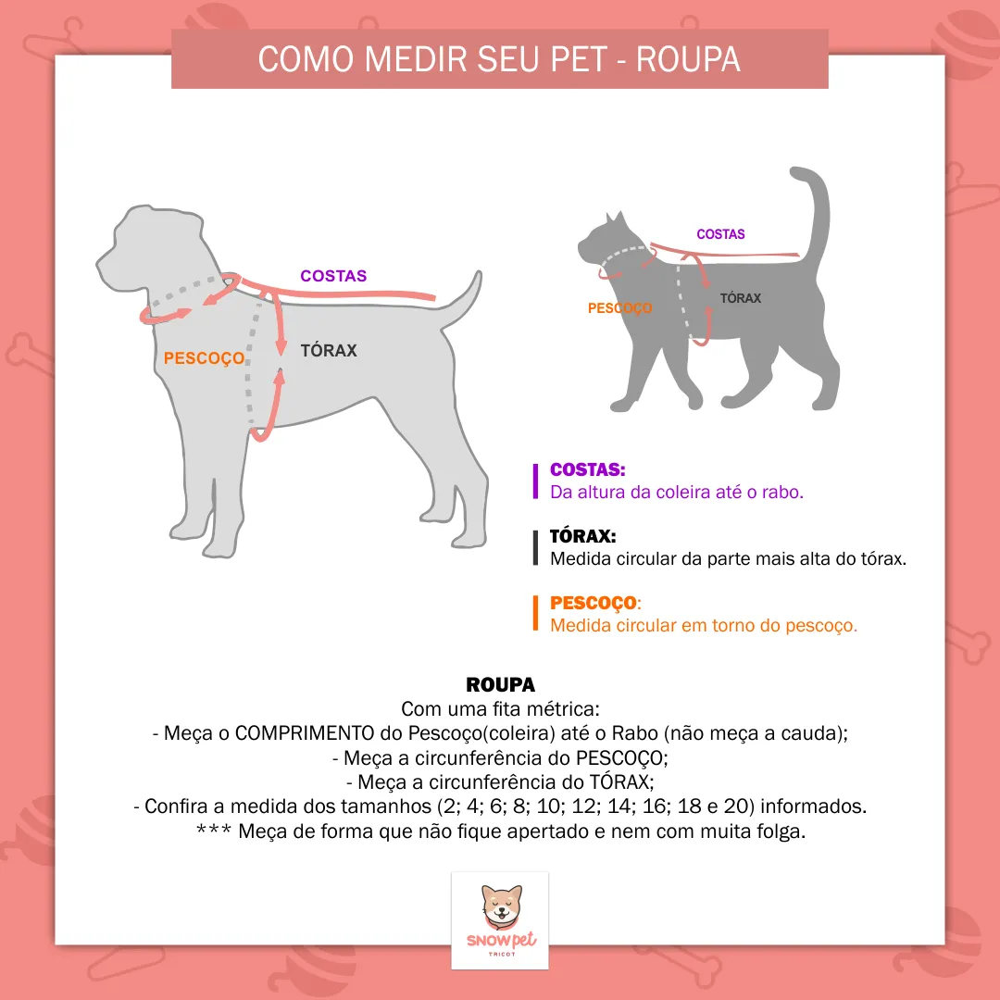

As roupas para cachorro deixam seu amigo mais bonito e protegem contra o vento, o frio e até a chuva. Entretanto, não basta cair a temperatura para usar a roupa de frio para cachorro. Cães têm a proteção natural dos pelos e são animais mais resistentes ao frio que os humanos. Nossa sensação térmica não é um bom parâmetro para definir o momento certo de usar roupas para cachorro. Verifique se o focinho, as orelhas e as patas estão mais gelados que o normal para saber se o animal está com frio. Quando a temperatura cai, priorize o uso de roupa de frio para cachorros de pelo curto, idosos, filhotes e animais com a saúde debilitada..
